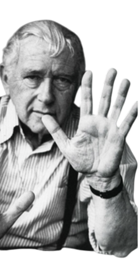
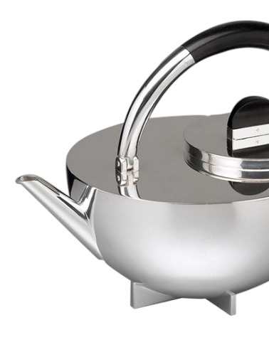
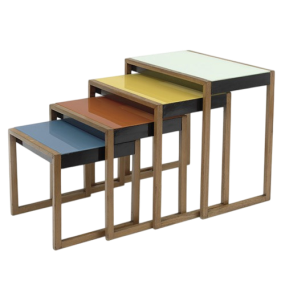

WHAT IS THE BAUHAUS?
The Bauhaus is a design school created in 1919 by Walter Gropius. It is a building with a very modern architectural style for its time. It welcomed more than 1000 students, among whom were many renowned artists.
Marcel Breuer: I am a designer and architect trained at the Bauhaus. I am particularly known for my tubular steel furniture



Teapot by Marianne Brandt
The Bauhaus architectural movement, born in Germany in the 1920s, revolutionized the design of modern spaces. Refusing ornamentation and pastness, it advocates functional, rational architecture turned towards the future. Simple geometric shapes, clean facades and the use of glass, steel and concrete reflect a desire for transparency and efficiency. Inspired by the idea that aesthetics derives from function, the Bauhaus laid the foundations of modernism and permanently influenced the urbanism and design of the 20th century.

The interior of the Bauhaus reflects the same principles as its architecture: simplicity, functionality and harmony between form and use. The spaces are bright, open and designed to promote modern life. The furniture, designed by designers like Marcel Breuer or Mies van der Rohe, combines lightness and efficiency thanks to innovative materials like tubular metal. Each object, from the lamp to the chair, is designed to meet a concrete need without superfluity. The interior of the Bauhaus thus embodies an ideal of balance between beauty, comfort and utility.
The interior of the Bauhaus


THE SPIRIT OF THE BAUHAUS
The Bauhaus, founded in 1919 by Walter Gropius, carried the ambition to bring together art, craft and industry to create a more harmonious world. More than a style, it was a state of mind: designing simple, functional forms accessible to all. By abolishing the boundaries between disciplines, the Bauhaus made creation a social tool, placing art at the service of daily life.
"Bauhaus Nesting Tables" by Josef Albers
the Wassily chair
 